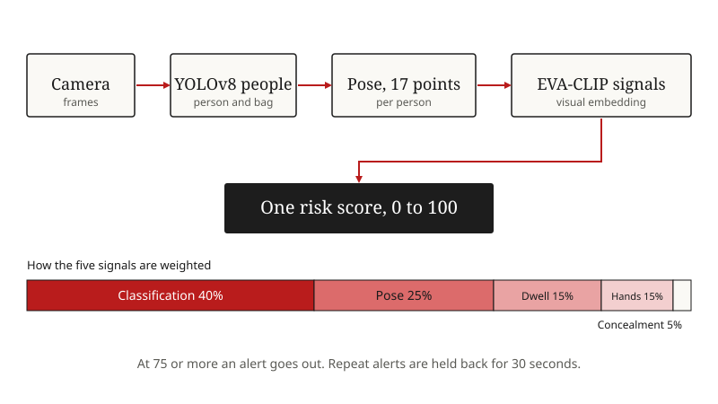

Argus sub-projectEnded 2026
Argus One
The theft-detection AI. It watched live store cameras, tracked body pose and gave each person one risk score.
- Private repo

A wall of video is not an alert.
A store with many cameras produces more video than anyone can watch. A person at the counter cannot also study a screen of grey squares. Theft is usually found afterward, when someone scrolls through footage to see what happened.
We needed something that watches every feed, picks out the few moments that look wrong, and tells staff early with one clear number.
Read the body, not just the picture.
Argus One splits the job. One model finds the people. A second tracks how each body moves, using 17 points on the body. A third reads what the scene looks like. Then a small fusion step weighs five signals into a single score from 0 to 100 for each person.
Signals include a hand moving toward the torso, reaching for a high shelf, crouching, staying in one spot for a long time, and quick hand movement. A score of 75 or more raises an alert. Repeat alerts are held back for 30 seconds so staff are not spammed.
How one score gets built
| Model | Job | Output |
|---|---|---|
| YOLOv8n | Finds people and bags | Boxes and classes |
| YOLOv8x-Pose | Tracks body pose | 17 keypoints per person |
| EVA02-CLIP-L-14 | Reads the visual scene | A 1024-number description |
| YOLO classifier | Shoplifting or normal | One label |
| LightGBM | Fuses the signals | A risk probability |
Pose gives 22 numbers per person, such as hand-to-torso distance, elbow angle, body height and hand speed. Speed uses a 10-frame window so a quick grab shows up as a spike.
The weights that make the final score are classification 40%, pose risk 25%, time in one spot 15%, hand near body 15% and concealment 5%.
When the score crosses the threshold an alert goes out as a signed message to the business app, which shows it on the dashboard.
| Signal | Weight |
|---|---|
| Classification | 40% |
| Pose risk | 25% |
| Time in one spot | 15% |
| Hand near body | 15% |
| Concealment | 5% |
What it cannot see
The project notes are direct about this. Argus One does not detect an item actually going into a bag, goods disappearing from a shelf, concealment under clothing, eye gaze, or groups working together. It scores behavior that often goes with theft. It does not prove theft.
That is why the output is a score that points a person at a clip, and why a human decides what happens next.
By the numbers
- 1risk score per person
- 5signals weighted into it
- 92%model accuracy
- About halfof the commits are mine
What I owned
- Combined person detection, body pose and visual signals into one risk score per person.
- Wrote about half the commits, plus the tests, docs, the streaming link and deployment.
- Fine-tuned a vision model on store camera clips to cut false alarms.
- Built the streaming agent: a desktop app that sends a store’s camera feeds to Argus.
What I learned
Several small signals beat one clever model. Splitting the job made each piece easy to test and easy to explain to a store owner.
Writing down what a model cannot do is part of shipping it.